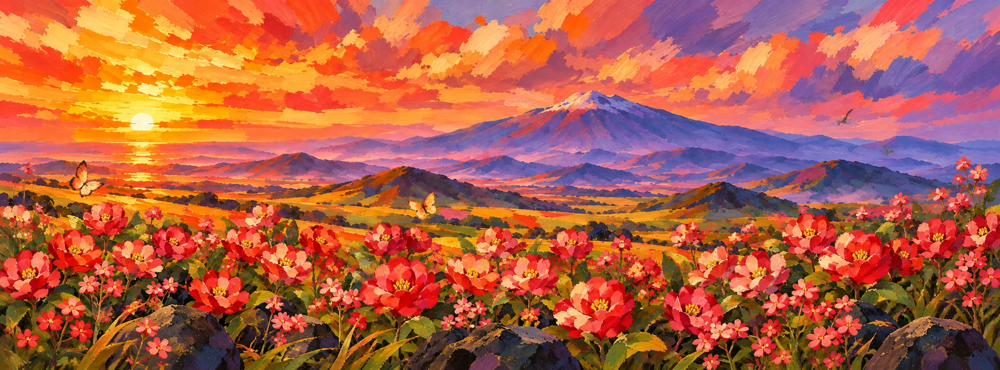
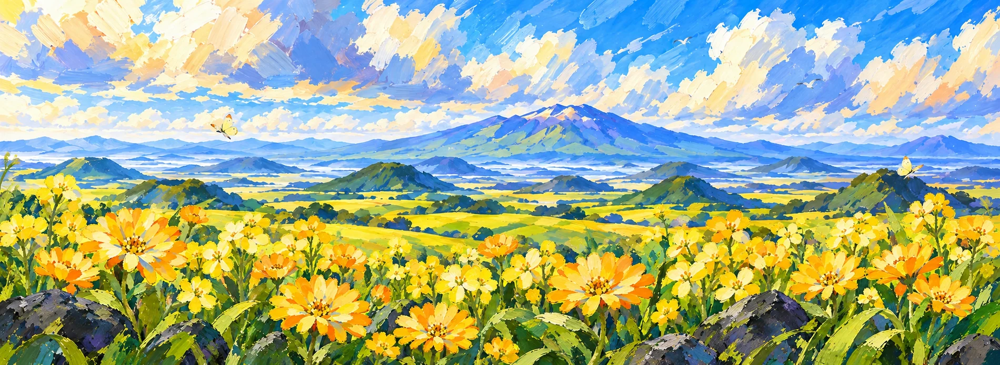
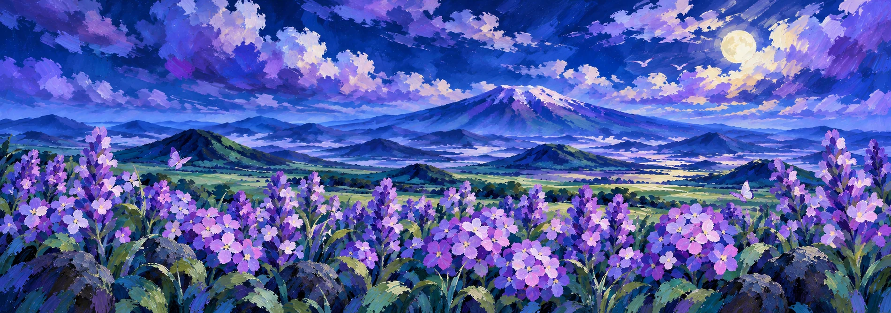
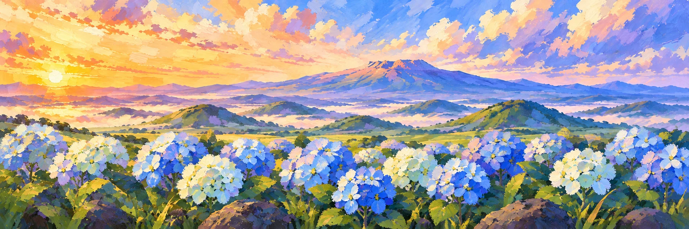

MAZELAND JEJU · 2026.10.22 · v44
한라산부터 작은 날개까지,
같은 붓결로 그린 정원.
배경4종, 통합 정원의 만개·봉오리8장, 잎·풀·돌·구름·나비·새64개를 새로 그렸습니다. 새 유화 꽃의 만개·봉오리32장과 함께 배경별 조명을 맞췄습니다.
BG01 / LT01 · 2026.10.22 · v44
노을 · 레드
왼쪽 낮은 앰버빛 · 보라 그림자
꽃 구성: 동백꽃 A · 진홍 · 동백꽃 B · 빨강 · 메밀꽃 A · 붉은 분홍 · 메밀꽃 B · 붉은 분홍
만개한 통합 정원




BG02 / LT02 · 2026.10.22 · v44
낮 · 옐로우
왼쪽 위 아이보리빛 · 하늘색 그림자
꽃 구성: 금잔화 A · 황금노랑 · 금잔화 B · 황금노랑 · 유채꽃 A · 레몬노랑 · 유채꽃 B · 선명한 노랑
만개한 통합 정원




BG03 / LT03 · 2026.10.22 · v44
밤 · 퍼플
오른쪽 위 은빛 달빛 · 코발트 그림자
꽃 구성: 라벤더 A · 연보라 · 라벤더 B · 짙은 보라 · 수국 A · 라일락 · 수국 B · 보라
만개한 통합 정원




BG04 / LT04 · 2026.10.22 · v44
아침 · 블루
왼쪽 낮은 복숭아 금빛 · 푸른 보라 그림자
꽃 구성: 수국 A · 하늘색 · 수국 B · 파랑 · 수국 C · 코발트블루 · 수국 D · 옅은 하늘빛
만개한 통합 정원




원본108장: 새 이미지76장 + v43 꽃32장. 개별 소스는 실제 알파 PNG이며, 생성 원본은 별도로 보존했습니다. 가로형4096×1006 파일은 전시 화면 비율에 맞춘 중앙 크롭·일반 리샘플링 출력입니다. AI 업스케일 결과가 아닙니다.
정지 이미지 업데이트입니다. 새 화풍의 개화·루프 영상과 Unity 실장비 검수는 아직 진행 전입니다.